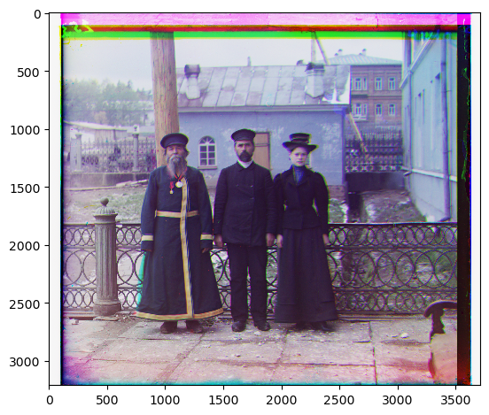

Project 1 - Colorizing the Prokudin-Gorskii Photo Collection
Filip Malm-Bägén

In the early 1900, Prokudin-Gorskii traveled across the Russian Empire and took photographs of the people, landscapes, and architecture. His photographs were taken in black and white, but he used a special camera that took three photographs in quick succession, each with a different color filter (red, green, and blue). The technology to print color photographs did not exist at the time, so Prokudin-Gorskii's photographs were not seen in color until the 2000s when they were digitized and the color channels were aligned. This project is about colorizing the Prokudin-Gorskii photo using the three black and white images. Additionaly, methods of automaticaly contrasting and adjusting the white balance of the images are implemented.
Getting Started
[Steps for getting started]
The Content Editor
[Details about content editing]
Fetching Data
[Information about data fetching]
Custom Fields
[Custom fields explanation]
Environment Variables
[Environment variables setup]
FAQs
[Frequently asked questions]